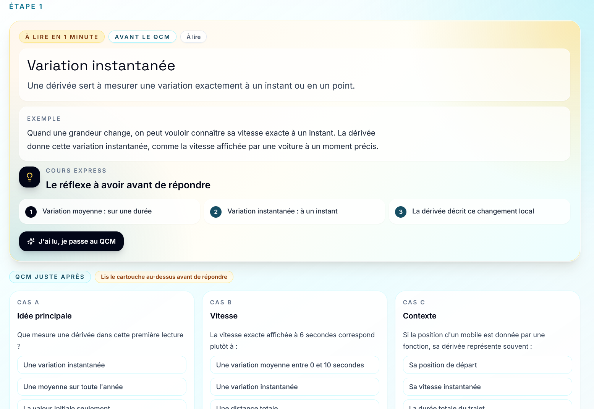
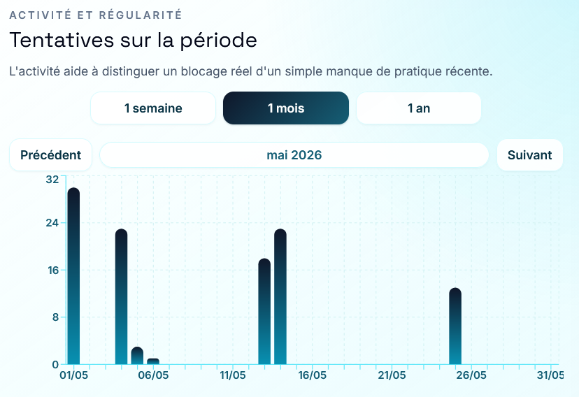
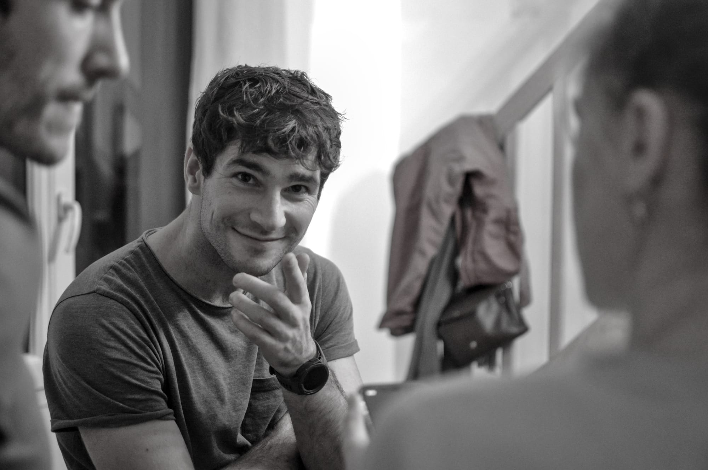

7/10
Employeurs
La pensée analytique est la compétence cœur la plus recherchée.
Les maths entraînent à décomposer, modéliser, vérifier et interpréter.
Une plateforme d'apprentissage adaptatif des mathématiques, pilotée par l'enseignant.
La pensée analytique est la compétence cœur la plus recherchée.
Les maths entraînent à décomposer, modéliser, vérifier et interpréter.
Entre 2018 et 2022, la moyenne OCDE en mathématiques chute d'environ 15 points.
Environ trois quarts d'une année normale d'apprentissage.
En France, en 4e, l'écart entre les élèves les moins et les plus performants augmente fortement.
Le problème n'est pas seulement le niveau moyen : les trajectoires divergent.
Résultat visible
Un même blocage visible peut cacher plusieurs causes
Obstacles invisibles · Moment optimal du feedback · Trajectoires d'apprentissage · Motivation · Attention
Feedback ciblé · Récupération active · Espacement · Charge cognitive · Métacognition
Importance des prérequis · Différenciation utile · Retours réguliers · Exercices progressifs
Correction collective · Même exercice pour tous · Note finale · Peu de diagnostic individuel
Pédagogie explicite et mesure d'indicateurs de performance par étudiant.
33 utilisateurs BUT1 GCGP.
Indicateurs d'activité et pic d'usage juste avant l'examen.


Prototype pédagogique existant.
Cœur deeptech du projet.
Objectif : maturation par preuve de concept scientifique et intégration plateforme.
Apprentissage, mémoire, charge cognitive et cognition mathématique.
Expérimentation, usages enseignants, terrain scolaire, preuve pédagogique.
Paramètre les objectifs, suit les blocages et garde le contrôle.
Travaille à son rythme avec indices gradués et feedbacks courts.
Finance si l'outil prouve progression, adoption et cadre réglementaire.

Produit & pédagogie terrain. Recherche et validation scientifique côté usage.
Technologie & architecture IA. Recherche et validation scientifique côté modélisation.
Développement marché, opérations, financement et relation avec les établissements.
Transformer le prototype en produit robuste : interfaces, données, intégration IA, déploiement et sécurité.
Clarifier l'ambition deeptech.
Demande à rejoindre le programme d'incubation.
Lancer le cadrage projet, labo et verrous.
Formaliser modèle, terrain, protocole et stratégie PI.
Passer la brique deeptech de TRL 2 vers TRL 3/4.
Viser une candidature plus crédible, après preuve de concept.
Identifier, avec les laboratoires, le bon modèle de connaissances mathématiques et les verrous scientifiques à lever.
Nous aider à identifier les profils complémentaires associés à la création de l'entreprise.
Bénéficier d'un accompagnement global : structuration, modèle économique, financement, PI, expérimentation et roadmap.